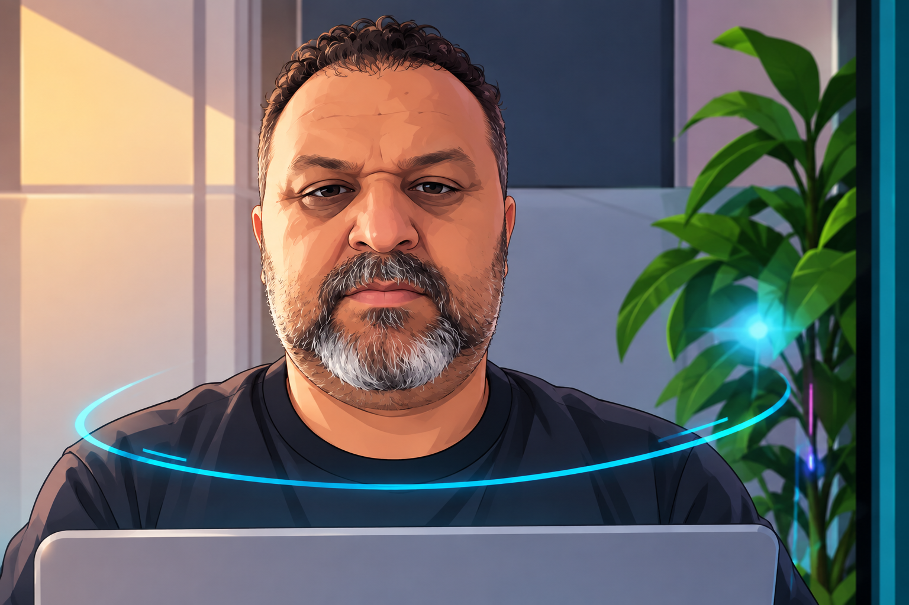

Sobre Mim
Meu nome é Marcello Pereira. Atualmente sou aposentado e estou dedicando parte do meu tempo ao aprendizado e ao desenvolvimento de novas habilidades na área de tecnologia. Estou cursando Programação Web no Dom Bosco, buscando ampliar meus conhecimentos e acompanhar as constantes evoluções do mundo digital.
Sempre acreditei que o aprendizado é um processo contínuo, independentemente da idade ou da fase da vida. Por isso, decidi investir na área de desenvolvimento web, adquirindo conhecimentos em tecnologias utilizadas na criação de sites e aplicações para a internet.
Sou uma pessoa comprometida, dedicada e aberta a novos desafios. Meu objetivo é desenvolver competências que me permitam participar de projetos tecnológicos, colocar em prática o que aprendo durante o curso e continuar evoluindo pessoal e profissionalmente.
Acredito que a tecnologia oferece inúmeras oportunidades de crescimento e inovação, e estou motivado a construir uma nova trajetória baseada no conhecimento, na criatividade e na vontade de aprender.
Posso também adaptar o texto para um tom mais formal, acadêmico ou profissional, dependendo da finalidade (currículo, atividade escolar ou apresentação pessoal).
